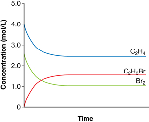
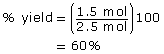
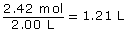
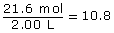
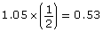
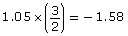

Module 7—Principles of Chemical Equilibrium
 Try This
Try This
In this activity you will complete a “Virtual ICE Table.” Use the information provided to determine the values for the empty cells in the table. Enter your answers into the appropriate cells to determine whether your answers are correct.
 Self-Check
Self-Check
SC 6. Complete “Practice” question 6 on page 682 of the textbook.
SC 7. An experiment to study the equilibrium in the following system is conducted:
N2(g) + 3 H2(g)  2 NH3(g)
2 NH3(g)
In the experiment, 2.42 mol of NH3(g) and 20.76 mol of H2(g) were added to an evacuated 2.00-L flask. At equilibrium the concentration of ammonia in the flask was 1.05 mol/L.
Prepare a table showing the initial, change, and equilibrium concentrations for each of the substances in the system.
Self-Check Answers
Contact your teacher if your answers vary significantly from the answers provided here.
SC 6.
Practice 6.
- The graph shows that the equilibrium concentration of ethene is 2.5 mol/L. The change in ethene concentration is 4.0 mol − 2.5 mol = 1.5 mol. Since the coefficients in the balanced chemical equation are all 1, all species undergo a change in concentration of 1.5 mol/L. Therefore, the equilibrium concentrations are as follows:
Br2(g) = 2.50 mol/L − 1.5 mol/L = 1.0 mol/L
C2H3Br(g) = 0 mol/L + 1.50 mol/L = 1.50 mol/L

Concentration |
C2H4(g) (mol/L) |
Br2(g) (mol/L) |
C2H3Br(g) (mol/L) |
Initial |
4.0 |
2.5 |
0 |
Change |
–1.5 |
–1.5 |
+1.5 |
Equilibrium |
2.5 |
1.0 |
1.5 |
- The volume of the container is 1 litre. This is determined by the information provided on the graph, which shows an initial concentration of ethane of 4.0 mol/L. Since 4.0 mol of ethane were used, the volume of the container must be 1.0 L.
- Since all coefficients are 1, the moles of bromine are lower than the moles of ethene. Therefore, bromine is the limiting reagent. The maximum yield of bromoethene would be 2.50 mol. Therefore,

SC 7.
Concentration |
N2(g) (mol/L) |
H2(g) (mol/L) |
NH3(g) (mol/L) |
Initial |
 |
 |
0 |
Change |
 |
 |
0 + 1.05 = +1.05 |
Equilibrium |
1.21 − 0.53 = 0.68 |
10.8 − 1.58 = 9.2 |
1.05 |